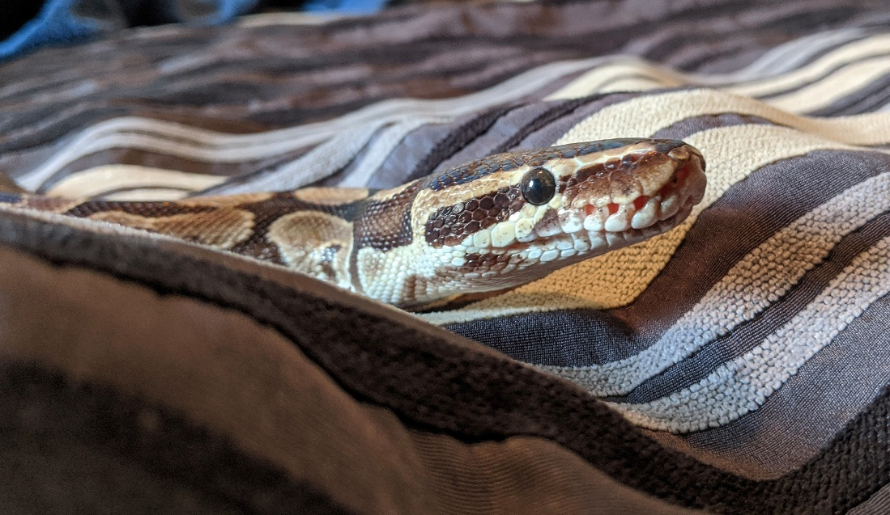

Housing & Environment
Depending on which type of animal you adopt, you can provide a comfortable environment using anything from small to large cages or glass aquariums.
You also need to consider if your new pet will need a friend or if it will be happy living alone.